蓋朗格峽灣
Geirangerfjord
Geirangerfjord
七姊妹瀑布 De syv søstrene
七道並列的細長水流同時從峭壁墜下，是峽灣最經典的畫面；隔岸的「求婚者瀑布 Friaren」與之相望，傳說中向七姊妹求婚被拒。
兩側是幾百公尺高的垂直峭壁，海水卻深入內陸幾十公里 —— 這是地球上少數幾條海岸線才有的尺度。
峽灣不是一般的海岸線，而是冰河期留下的巨大地質傷疤——水灌進去之後，變成了一種尺度感完全不同的風景。
兩側峭壁動輒數百公尺甚至上千公尺高，海水卻深入內陸幾十公里，站在船上會有種被巨人峽谷包夾的壓迫感。
峽灣不是河流侵蝕出來的，而是冰河期巨大冰川把整個山谷刨成 U 字型深槽，冰退去後海水灌入才形成。
雪水瀑布常直接從峭壁頂端落入海面，加上高緯度夏季日照角度低，光線會在峽灣裡拉出很長的影子與反光。
陡峭荒涼的地形裡散布著小漁村、教堂與果園，人類聚落與原始地質奇觀並存。
峽灣的形成需要三個條件疊加：冰河 + 山地 + 海岸。第四紀冰河期，大陸冰川反覆刨蝕既有的山谷，海平面上升後海水灌入,才形成了今天看到的峽灣。
示意圖講的是抽象原理，但冰河其實還在——約斯特谷冰原（Jostedalsbreen）伸出的分支冰舌「布里斯達冰河 Briksdalsbreen」，此刻仍嵌在灰白岩壁刨出的深谷裡，正是①②階段仍在進行式的現場證據。
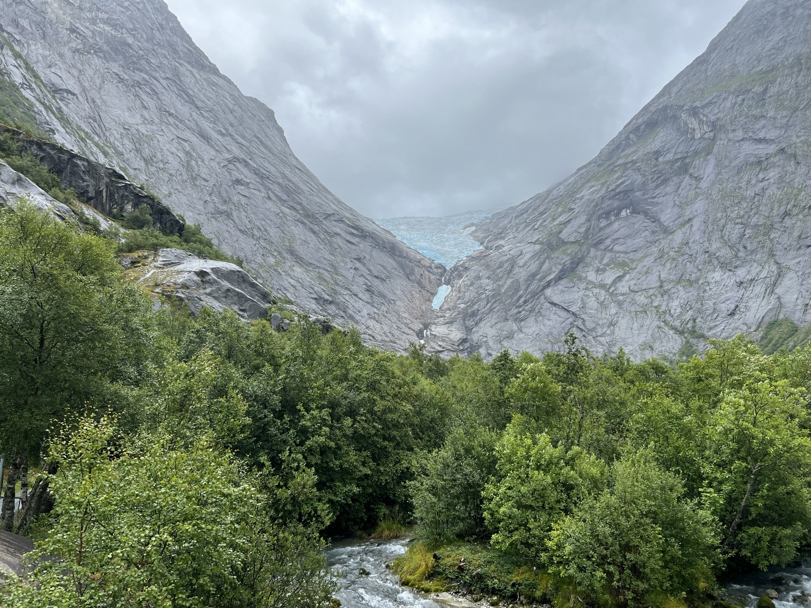
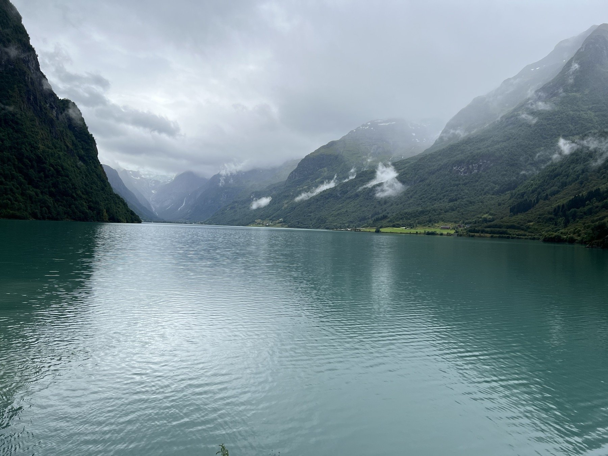
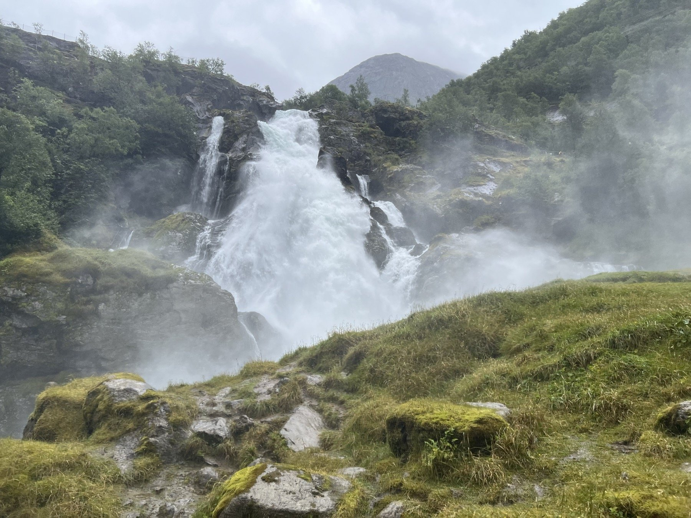
主谷刨得比支谷深，是關鍵。峽灣的主河谷曾被巨大冰川反覆刨蝕，下切速度快、谷底挖得非常深；旁邊匯入的支流冰川規模小得多，只能刨出比較淺的谷地。冰河退去、海水灌入主谷後，那些小支谷的谷口就「懸空」在主峽灣峭壁的半山腰甚至頂端——這就是「懸谷」（hanging valley）。
懸谷裡的水沒有緩坡可以下降，落差往往是幾百公尺的垂直峭壁，水流只能直接墜落，於是形成細長、幾乎垂直落入海面的瀑布。加上峽灣多在高緯度、高山地帶，山頂常年積雪，融雪季水量特別穩定豐沛，瀑布幾乎是峽灣地形的必然副產品。
七道並列的細長水流同時從峭壁墜下，是峽灣最經典的畫面；隔岸的「求婚者瀑布 Friaren」與之相望，傳說中向七姊妹求婚被拒。
挪威最長最深的峽灣，融雪期支流峽谷沿岸出現多處季節性瀑布，是聯合國教科文組織世界遺產。
縮影鐵路（Flåmsbana）中途停靠的著名瀑布站，落差壯觀、水量驚人，是峽灣鐵道行程的固定亮點。
Vøringsfossen 落差約 182 公尺；Låtefossen 是雙瀑布並列；Steinsdalsfossen 特色是能直接走到水簾「後方」。
水量高度依賴季節——融雪高峰的 5–7 月最壯觀，秋冬水量會明顯減少甚至結冰。
峽灣的形成需要「冰河 + 山地 + 海岸」三個條件疊加，所以分布集中在中高緯度、緊鄰高山的海岸線，赤道附近完全沒有。
全世界峽灣密度最高、規模最大，Sognefjord、Geirangerfjord 都是代表。
Fiordland 國家公園，Milford Sound、Doubtful Sound。
安地斯山脈南端沿海，智利南部與阿根廷交界。
溫哥華到阿拉斯加沿線的海岸峽灣。
冰河灣國家公園一帶。
世界最長的峽灣 Scoresby Sund。
規模較小，當地稱為 sea loch。
Westfjords 峽灣區。
奧斯陸 → 蓋朗格峽灣 → 布里斯達冰河 → 索娜峽灣 → 弗斯 → 卑爾根，實地拍下的峽灣與瀑布。
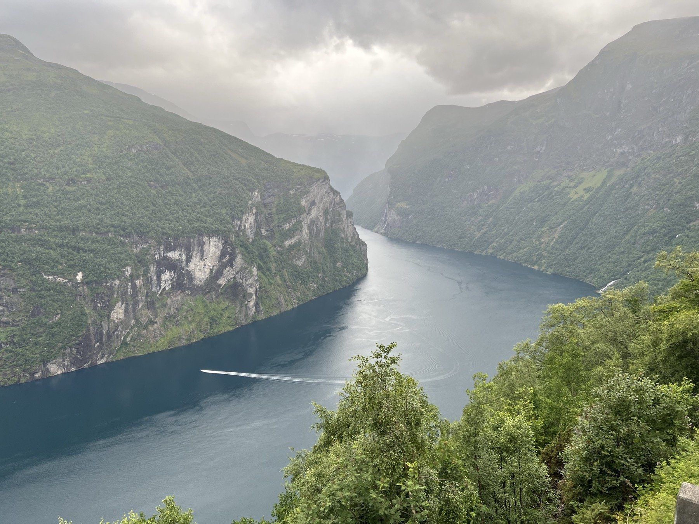
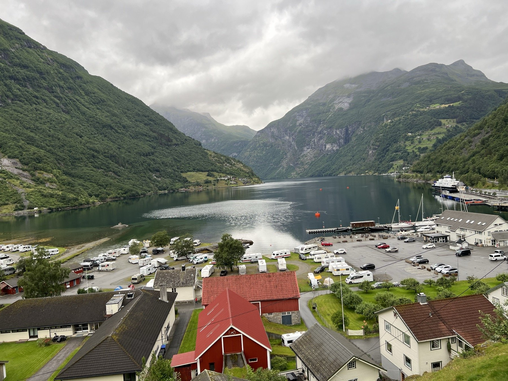
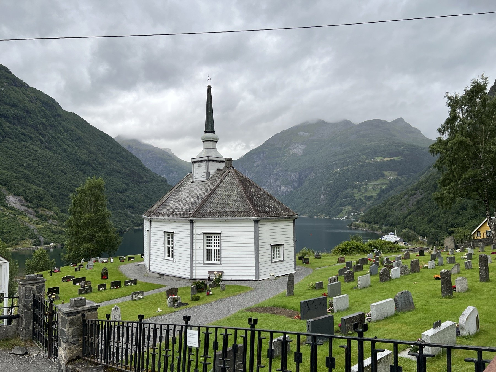
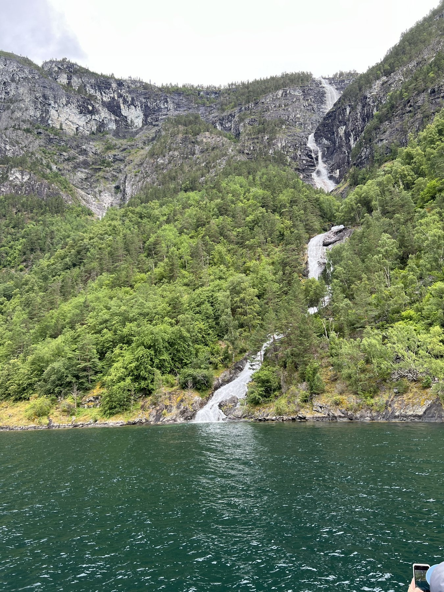
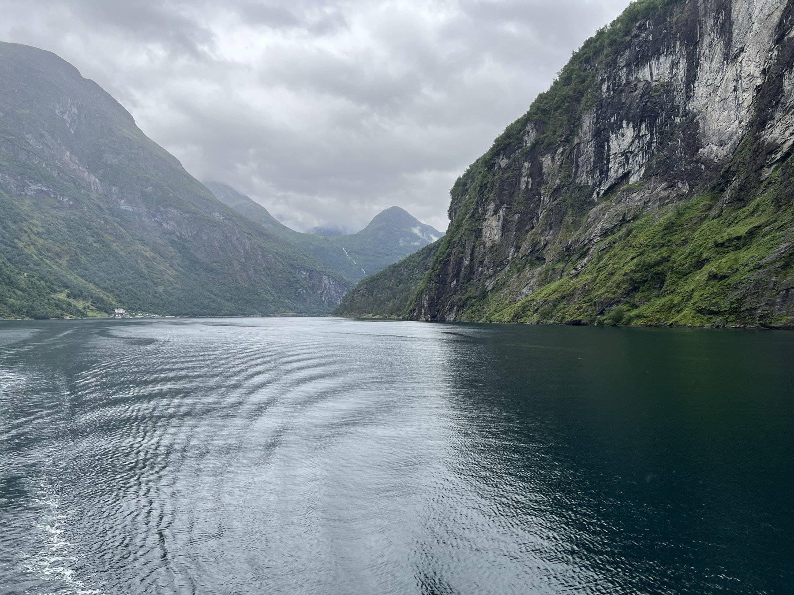
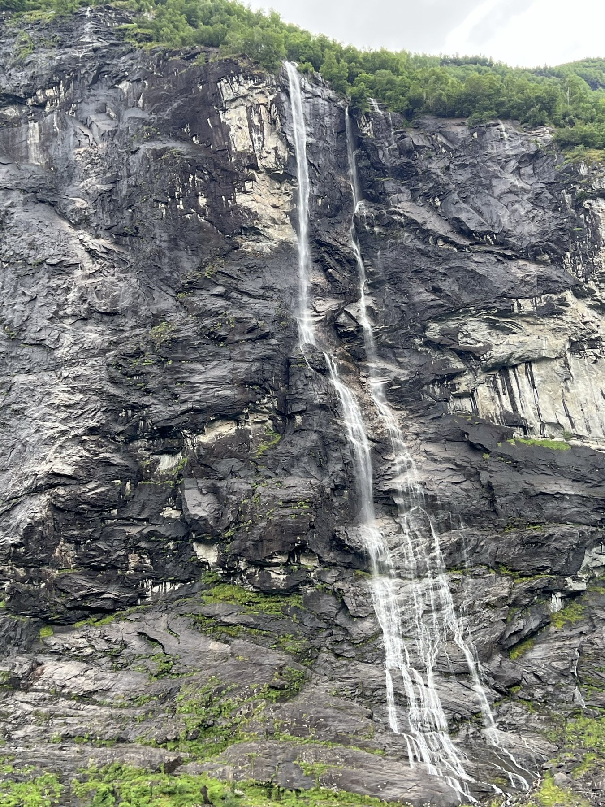
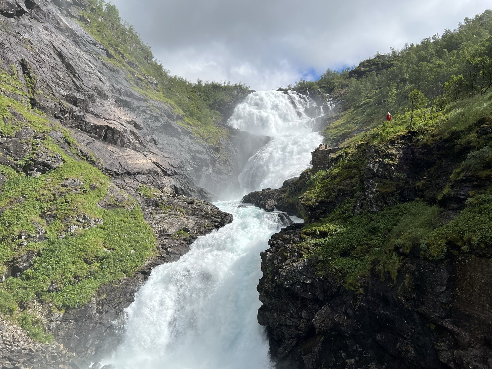
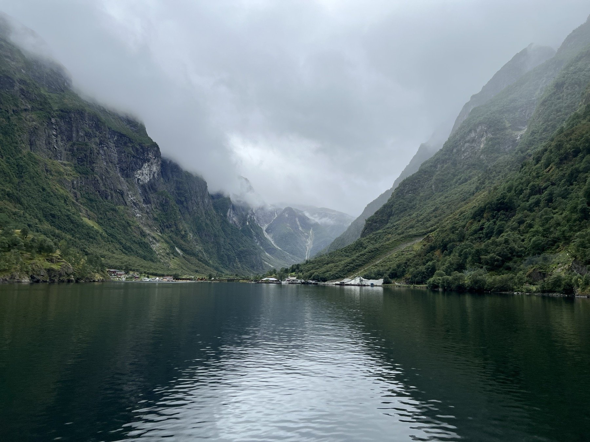
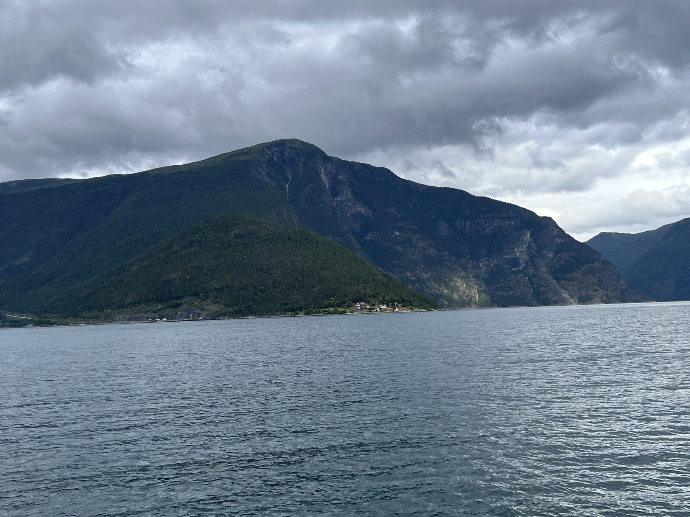